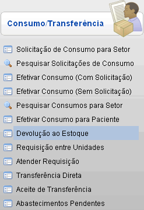
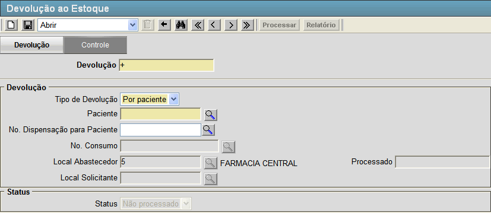
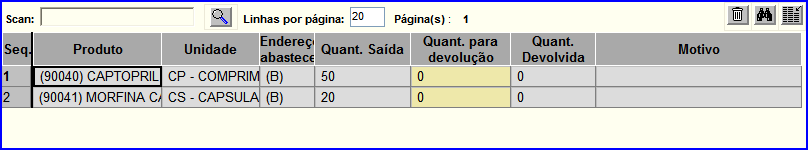
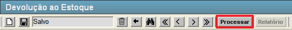
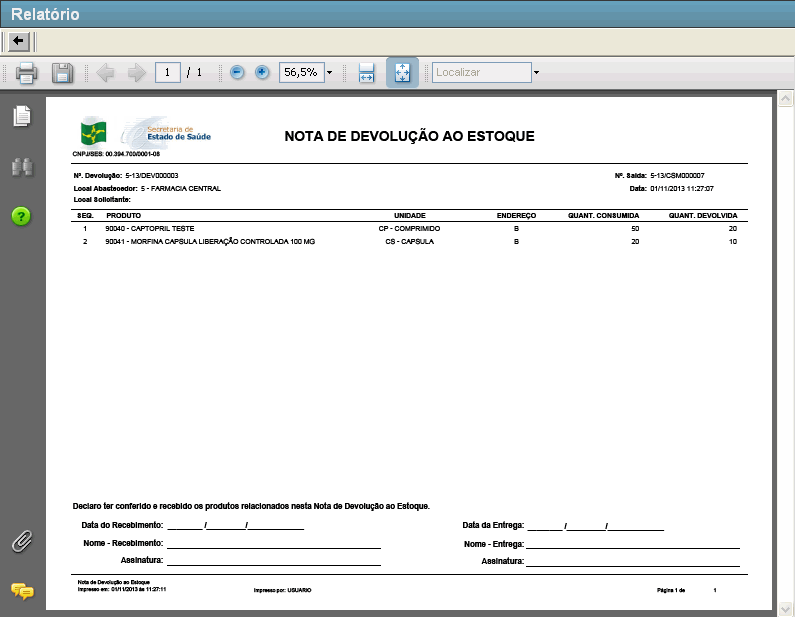

|
Devolução ao Estoque [ Voltar ]Esta tela permite o usuário realizar devoluções de produtos ao estoque. O formulário "Devolução ao Estoque" encontra-se dentro do menu "Movimentações - Consumo/Transferência". 
Após clicar no formulário, o sistema abrirá a seguinte tela. 
Siga os passos abaixo para efetuar uma devolução ao estoque. 1º Passo: informe os detalhes da devolução.
2º Passo: clique no botão
 [Salvar] para salvar os dados da devolução. Assim que a devolução é salva, uma grade
para a inclusão de materiais da devolução será exibida na parte
inferior da tela. [Salvar] para salvar os dados da devolução. Assim que a devolução é salva, uma grade
para a inclusão de materiais da devolução será exibida na parte
inferior da tela.
3°
Passo: especifique os produtos que comporão esta devolução. Clique
no botão
 [Pesquisar]
para selecionar o item a partir de uma lista contendo todos os
produtos cadastrados. Informe também a quantidade a ser devolvida e a
razão para devolução. Caso o produto seja referente a um consumo
específico essa grade estará preenchida com os produtos da solicitação
que gerou esta devolução. [Pesquisar]
para selecionar o item a partir de uma lista contendo todos os
produtos cadastrados. Informe também a quantidade a ser devolvida e a
razão para devolução. Caso o produto seja referente a um consumo
específico essa grade estará preenchida com os produtos da solicitação
que gerou esta devolução.4° Passo: clique no botão [Salvar] para salvar os produtos
selecionados para esta devolução. Após salvar o botão "Processar" estará disponível.
5° Passo: clique no botão  [Processar] para
efetuar a devolução. Após ser processada o botão "Relatório" estará disponível. [Processar] para
efetuar a devolução. Após ser processada o botão "Relatório" estará disponível. 6º Passo (Opcional): Após o processamento, por meio do botão
 [Relatório] é possível gerar o
relatório "NOTA DE DEVOLUÇÃO AO ESTOQUE". [Relatório] é possível gerar o
relatório "NOTA DE DEVOLUÇÃO AO ESTOQUE". |
 [Pesquisar] para selecioná-lo a partir de uma listagem contendo todos os pacientes cadastrados.
[Pesquisar] para selecioná-lo a partir de uma listagem contendo todos os pacientes cadastrados.